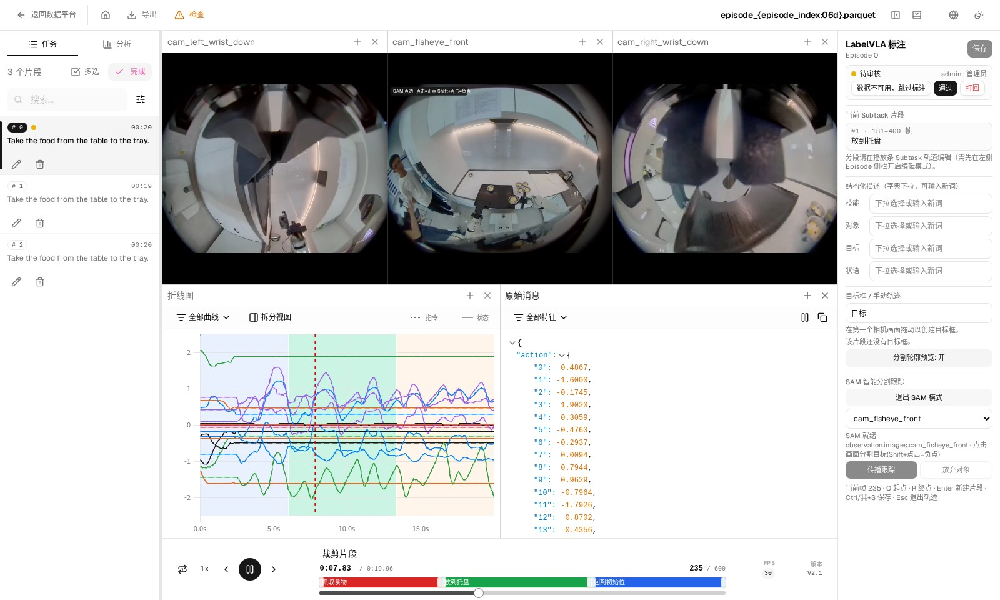
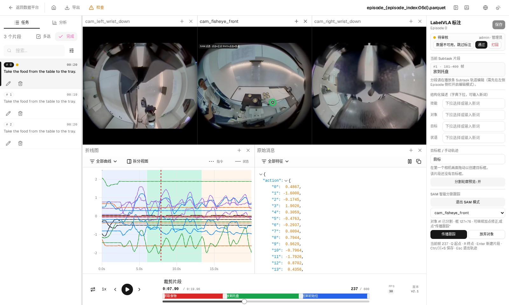

4. SAM 辅助分割
SAM 点一下目标就能分割出轮廓，并沿整段视频逐帧跟踪，省去手工画每一帧。它由独立部署的推理服务提供；没有配置时按钮会出现，但点击后无法建立会话。
操作步骤
- 选中片段例如「抓取食物」。没有选中片段时，SAM 面板不会出现。
- 点「SAM 点选分割」首次使用会上传当前 Episode 视频建立会话，面板显示「SAM 就绪」后即可点选。
- 在目标上点一下画面出现蓝色轮廓和绿色圆点，表示可以继续加点修正；按住 Shift 点背景可以作为负点修正。
- 点「传播跟踪」按钮上实时显示进度（例如 240/600 帧），结束后提示「已生成目标框：N 帧轨迹」。
- 保存按 Ctrl/⌘+S 或点右上角「保存」，轮廓在后台落盘，刷新后仍可查看。


注意事项
返回的框特别大：说明没点中目标（模型把桌面、墙面当成了目标）。点「放弃对象」换个位置再点，或换到视野更完整的相机重试。
其他几点实测经验：
- 腕部相机视野窄、遮挡多，通常不如正面相机点得准。
- 点选的那一帧已经出结果，但其他帧要等「传播跟踪」跑完才有轮廓，中途报「资源加载失败」属于正常现象。
- 传播是整段视频一起算的，进度条跑完再切换帧查看。